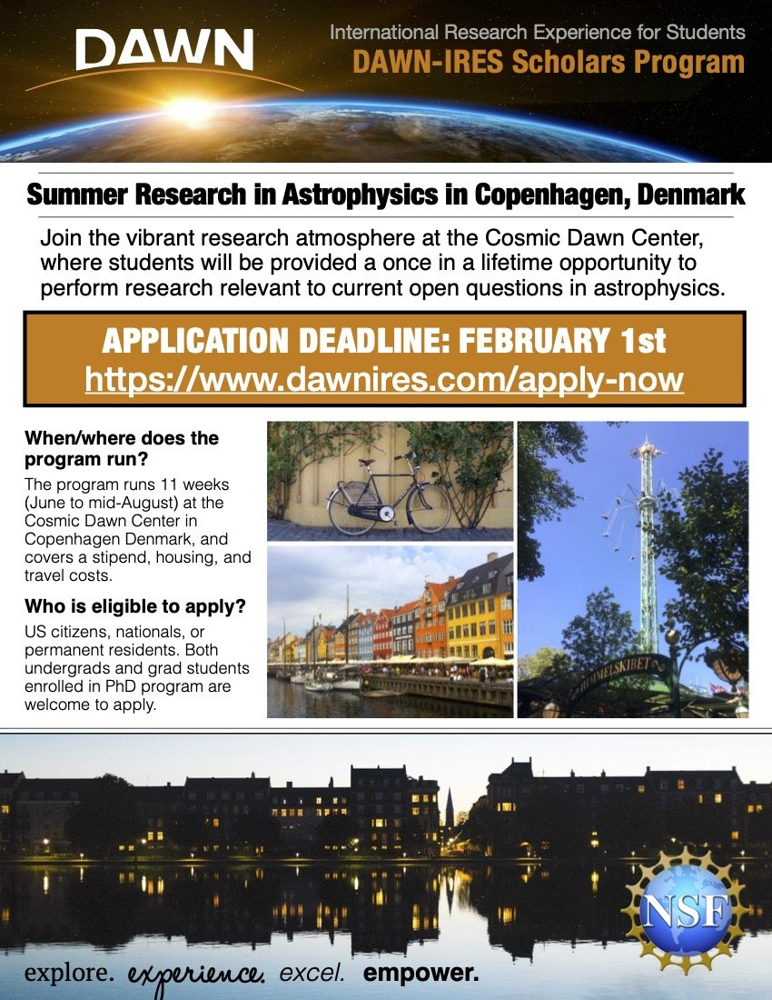
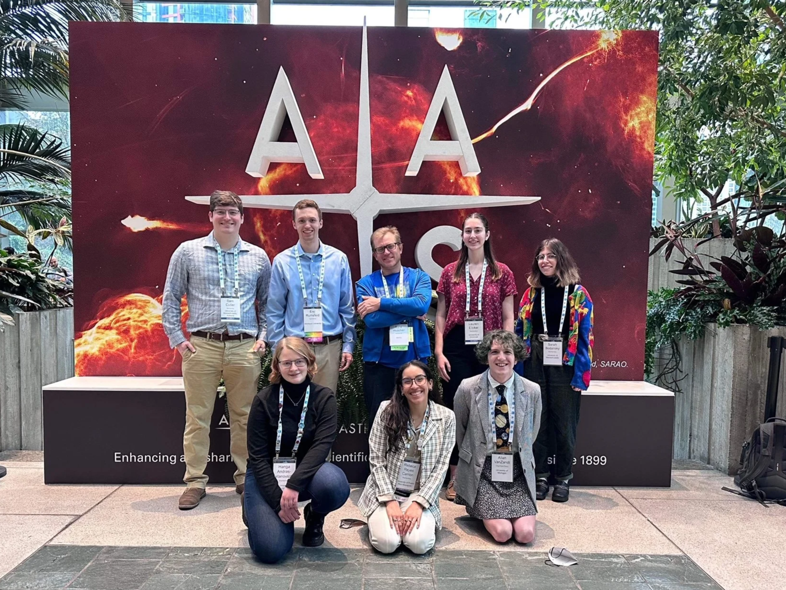
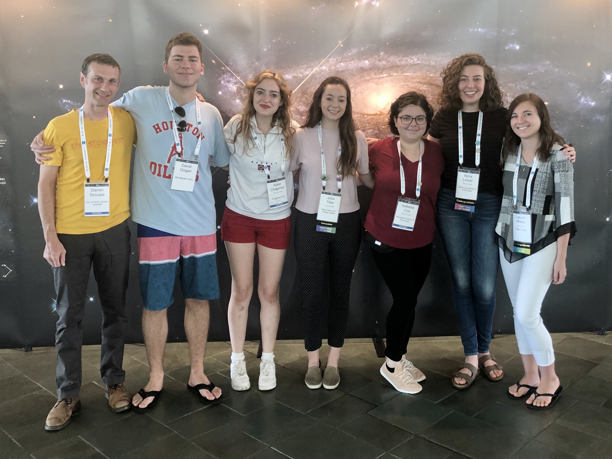

Announcing the Return of the DAWN-IRES Scholars Program!
It is with sincere pleasure that I announce that the National Science Foundation has recommended the funding for the second round of the DAWN-IRES Scholars Program, an international summer research experience for U.S. undergraduate and graduate students at the Cosmic Dawn Center of Excellence (DAWN) in Copenhagen, Denmark. This 10-week immersive program engages students in globally competitive astrophysics research while developing critical skills in data analysis, communication, and cross-cultural collaboration. Pending the final award processing, the program returns in the summer of 2026 and will run for three summers through 2028.
The DAWN-IRES Scholars Program is designed to be broadly inclusive and encourages applications from students across a wide range of backgrounds, including those that are underrepresented in science. In addition to one-on-one research mentoring, the cohort participates in community-building activities, professional development workshops, and public research presentations in both Denmark and the United States. The program promotes global collaboration, scientific discovery, and a more diverse and inclusive STEM workforce.
Applications are due February 1, 2026 and first offers will be made on March 1, 2026.


